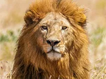
Lionwiki-fr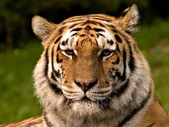
Tigrewiki-fr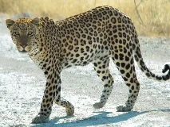
Léopardwiki-fr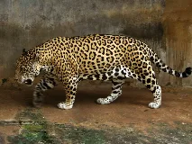
Jaguarwiki-fr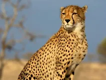
Guépardwiki-fr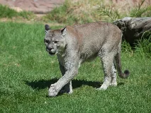
Pumawiki-fr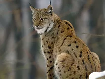
Lynx boréalwiki-fr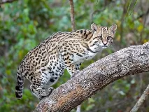
Ocelotwiki-fr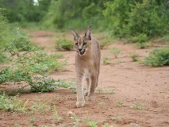
Caracalwiki-fr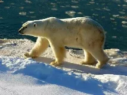
Ours polairewiki-fr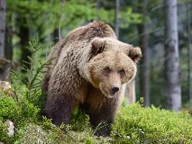
Ours brunwiki-fr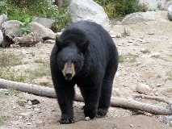
Ours noir americainwiki-fr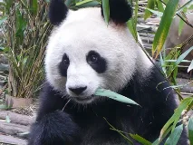
Panda géantwiki-fr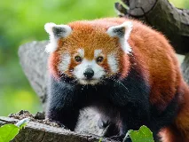
Panda rouxwiki-fr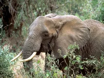
Éléphant d'Afriquewiki-fr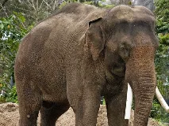
Éléphant d'Asiewiki-fr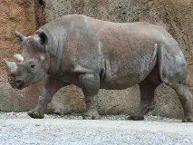
Rhinocéros noirwiki-fr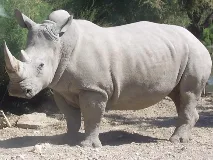
Rhinocéros blancwiki-fr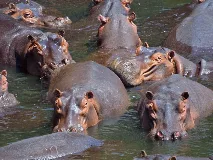
Hippopotamewiki-fr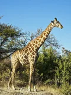
Girafebing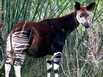
Okapiwiki-fr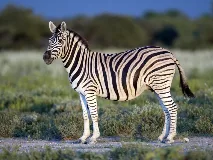
Zèbre des plaineswiki-fr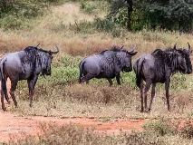
Gnouwiki-fr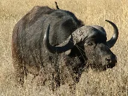
Buffle d'Afriquewiki-fr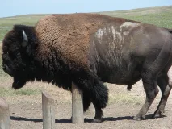
Bison d'Amériquewiki-fr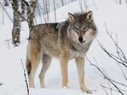
Loup griswiki-fr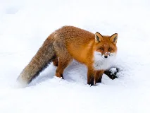
Renard rouxwiki-fr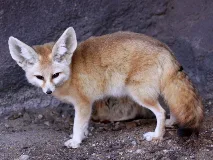
Fennecwiki-fr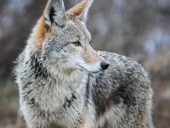
Coyotewiki-fr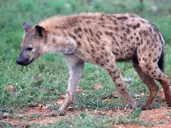
Hyène tachetéewiki-fr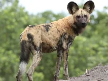
Lycaonwiki-fr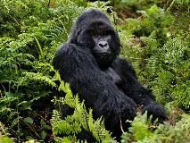
Gorille des plaineswiki-fr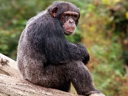
Chimpanzéwiki-fr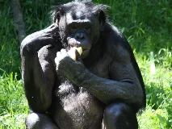
Bonobowiki-fr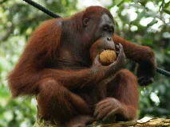
Orang-outanwiki-fr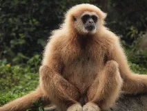
Gibbonwiki-fr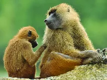
Babouinwiki-fr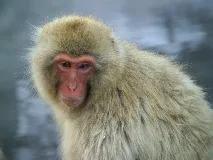
Macaquewiki-fr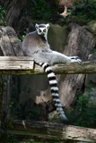
Lémur cattabing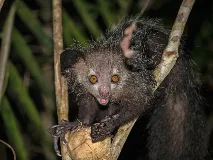
Aye-ayewiki-fr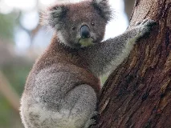
Koalawiki-fr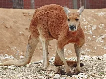
Kangourou rouxwiki-fr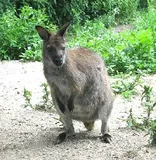
Wallabybing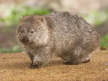
Wombatwiki-fr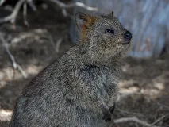
Quokkawiki-fr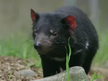
Diable de Tasmaniewiki-fr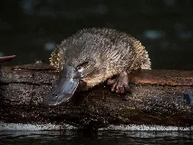
Ornithorynquewiki-fr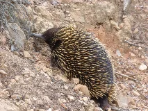
Échidnéwiki-fr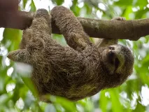
Paresseux à trois doigtswiki-fr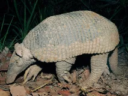
Tatou géantwiki-fr